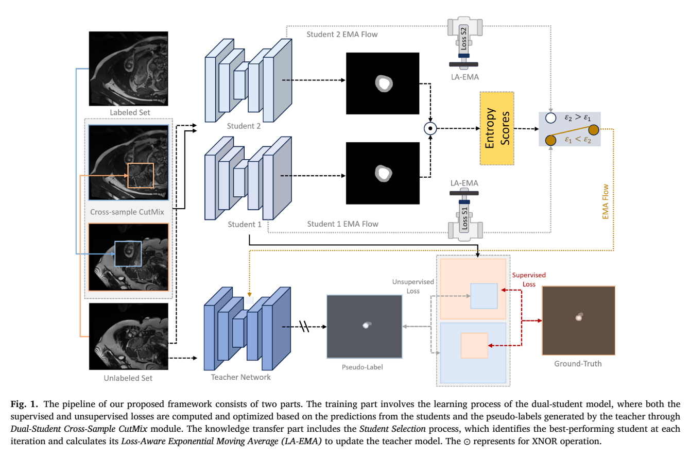

本篇未找到可可靠提取的方法流程图，请查看原文 PDF。
半监督分割（SSL）依赖少量像素级标注与大量无标注数据，主流范式为伪标签与一致性正则[p. 1]。作者指出，现有双任务协同方法（如DTC）虽引入距离回归作为辅助任务，但分割到距离的转换只能离线完成（概率图→二值掩码→距离图），导致信息流仅从回归单向流向分割，无法在线双向交互[p. 2]。此外，现有方法常弱化标注数据在SSL中的作用，且多技术并联易造成分支间信息交换不足[p. 2]。因此，作者希望构建一个可端到端训练、梯度连续的双向任务变换器，并把监督学习、一致性正则、伪监督与不确定性估计统一到一个目标中[p. 2–3]。
骨干：共享编码器E加两个并行解码器DΦ、DΨ，各带分割头Hs与回归头Hr，输出Ŷ与R̂；采用V-Net，含dropout与BN，两解码器上采样策略不同[p. 4]。
回归→分割：将距离值视为置信度，用式(1) Ŷr2s = 1/(1+e^(−k·R̂)) 转换，k为超参数[p. 5]。
分割→回归：核心是可微分3D距离变换。用卷积核K(x,y,z)=exp(−(x²+y²+z²)/h)（式2，h控制近似质量）迭代近似距离变换；分别对掩码与1−掩码做DT得Sin、Sout（式3），归一化相减得带符号距离图（式4），整体记为R̂s2r=Ts2r(Ŷ,K)（式5）[p. 5]。该设计使分割到回归的转换可在线、可反传，区别于离线方案。
监督损失：任务内监督Litsup对两分支求和，含分割的Dice+CE（Lseg）与距离的MSE（Lmse）（式6）；跨任务监督Lctsup用Ts2r(Ŷω)监督R、用Tr2s(R̂ω)监督Y（式7）；总监督Lsup=Litsup+Lctsup（式8）[p. 5–6]。
一致性：任务内一致性Litcon=Lmse(ŶΦ,ŶΨ)+Lmse(R̂Φ,R̂Ψ)（式9）；跨任务一致性Lctcon对每分支同时约束Ts2r(Ŷω)≈R̂ω与Tr2s(R̂ω)≈Ŷω（式10）；Lcon=Litcon+Lctcon（式11）[p. 6]。
伪监督：伪标签Ȳ=(ŶΦ+ŶΨ)/2（式12）；置信掩码M按“全体一致”原则，对四个输出（两分支×两任务）阈值化后取相等指示（式13）；Lpse=Lce(ŶΦ,Ȳ)⊙M+Lce(ŶΨ,Ȳ)⊙M（式14）[p. 7]。
总损失：Lall=λ(Lsup+Lcon)+βLpse（式15），λ经验取0.5，β按调度递增[p. 7]。算法1给出整体流程[p. 6]。
作者主张三点：(i) 可微分双向任务变换器，实现可梯度传播的任务互转；(ii) 统一强化四类SSL组件的简洁框架；(iii) 架构灵活、兼容主流SSL技术并可迁移到其他视觉任务[p. 3]。我的理解：真正的新意集中在式(2)–(5)的卷积近似距离变换，使“分割→回归”首次可在线反传；其余组件多为已有技术的组合，其价值在于统一目标下的协同，而非单点创新。
数据与划分：LA 100例，250/25/60（训练/验证/测试）体数据，重采样至1×1×1mm；Pancreas-CT 82例；BraTS2019 335例，仅取FLAIR的WT分割，250/25/60划分[p. 7]。
训练设置：PyTorch，RTX 4080；SGD，17000次迭代，初始学习率0.01，batch size 4；LA裁剪112×112×80、步长18×18×4，Pancreas与BraTS用96×96×96、步长16×16×16；指标DSC、95HD、ASD[p. 7]。
对比协议：只比较报告最终checkpoint的方法，排除按测试集选最优迭代的结果[p. 8]。
主要结果： - LA（16标注/64无标注）：DBiSL 90.54% Dice、1.80 ASD、6.05 95HD，优于DTC（89.42/2.10/7.32）、SCC（89.81/1.82/7.15）等；全监督80例上界为91.88/1.37/4.60[p. 8, Table 1]。 - Pancreas-CT（12/50）：Dice 81.09%最高，但ASD 1.71、95HD 6.90并非最优（URPC为1.43/4.39，AUA为1.64/5.90）[p. 9, Table 2]。 - BraTS2019（25/225）：85.09% Dice、1.89 ASD、8.12 95HD，优于MRPL（84.29/2.55/9.57）等[p. 9, Table 3]。
消融（Pancreas-CT）：完整模型81.09%；去掉回归任务降至64.58%（95HD 18.19）；去掉伪监督66.45%；去掉跨任务监督76.32%；去掉全部一致性68.15%；去掉跨任务一致性71.57%；去掉任务内一致性76.83%[p. 10, Table 4]。说明回归任务贡献最大，各组件均有正贡献。
统一处理消融：伪监督中排除标注数据后LA Dice从90.54%降至89.40%、95HD从6.05升至6.78[p. 10, Table 5]。
无标注训练数据表现：LA Dice 90.11%、Recall 88.60%、Precision 92.26%；Pancreas Dice 75.57%、Recall 81.81%、Precision 72.03%[p. 10, Table 6]。
标注比例：LA上5%/10%/20%/50%标注时Dice为84.62/88.78/90.54/91.84，5%时比基线62.23%高22.39个百分点[p. 12, Table 8]。
变换精度与效率：离线原始变换DSC 100.00%、1.03 s/case；在线原始99.95%、0.05 s/case；离线重采样91.17%、0.10 s/case；在线重采样97.53%、0.01 s/case；在线方案可微且用GPU[p. 11, Table 7]。
下采样率：0.5/0.3/0.1对应Dice 90.54/90.40/90.01，全分辨率在4080上显存溢出[p. 12, Table 9]。
预生成vs在线生成：Pancreas-CT上在线81.09% vs 预生成74.48%[p. 12, Table 10]。
计算开销（BraTS2019）：DBiSL 12.35M参数、训练0.492 s/iter、测试1.66 s/case、显存9.49GB；对比DTC 0.645 s/iter、MRPL 0.334 s/iter/10.40GB、CauSSL 23.60M/0.442 s/iter[p. 13, Table 11]。
骨干泛化（LA）：V-Net 90.54%、nnU-Net 90.09%、DiffUNet 90.13%、SegMamba 88.88%；因显存限制SegMamba用64³、nnU-Net与DiffUNet用96³ patch[p. 13, Table 12]。
双向必要性：DBiSL 81.09%/6.90mm；单向DBiSL-S2R 68.79%/17.65mm；DBiSL-R2S 71.59%/16.77mm[p. 14, Table 13]。
有支持的结论：双向可微变换在三个数据集上带来一致提升；消融与单向对比直接支持“双向优于单向”的主张；在线生成优于预生成（Table 10），且计算开销处于同类方法可接受范围。
作者报告的限制：BraTS仅评估WT单类，未覆盖TC/ET；未来需扩展到多目标、不完整标注与多模态[p. 14–15]。失败案例分析显示胰腺头尾因边界模糊与3D上下文不足而分割较差[p. 14]。
缺失或不充分证据：摘要称“两个基准数据集”，正文实际用三个[p. 1 vs p. 7]；λ=0.5为经验值，β仅说“递增”，未给具体调度；式(1)中k未报告取值；Table 2中DBiSL的ASD/95HD非最优，作者未深入讨论；Table 4消融仅在Pancreas-CT上做，未在LA/BraTS复现；Table 8中部分对比方法在5%/50%比例处缺失（表中为“/”）；未报告随机种子、方差或统计显著性。
已报告：V-Net骨干、双解码器双头、SGD/17000 iter/lr 0.01/batch 4、各数据集patch与滑窗步长、λ=0.5、下采样率0.5、损失公式(6)–(15)、伪标签与置信掩码构造。未报告：β的具体调度曲线、式(1)的k、卷积核h的取值与迭代次数、数据增强细节、预训练/初始化方式、随机种子与重复次数、Table 8中缺失对比项的实验条件。代码称接收后发布于 https://github.com/DirkLiii/DBiSL [p. 1]，当前不可用。复现时应优先核对距离变换的h与迭代次数，因其直接影响式(2)–(5)的近似精度。
本篇未找到可可靠提取的方法流程图，请查看原文 PDF。
作者关注半监督医学图像分割（SSMIS）在类别不平衡下的失效模式：现有一致性正则与伪标签方法主要从目标数据集内部生成监督信号，被称为“inward-looking”。在类别不平衡时，模型初始偏向多数类，随后用自身有偏的高置信预测生成伪标签，形成确认偏差的恶性循环，少数类逐渐得不到监督信号[p. 1]。作者认为在数据内部做重加权、选择性自训练或协同训练仍受限于该循环[p. 1][p. 2]。因此提出“outward-looking”思路：一方面引入与目标数据分布无关的外部基础模型作为语义教师（FKD），另一方面在数据层面用动态课程式CutMix（PIC）让模型先聚焦少数类、再逐步泛化[p. 1][p. 2]。
整体框架建立在带EMA教师的一致性正则基线上：对无标注数据生成弱增强与强增强视图，EMA教师从弱视图产生高置信伪标签，监督强视图预测；并加入辅助平衡分类器以解耦通用表征与类别不平衡处理[p. 3]。图1（第3页）给出PIC与FKD的整体流程；本文仅依据图注与正文描述，未解析图像内容。
使用预训练DINOv3 ViT编码器E_T作为冻结教师。对学生3D体数据x_u，学生编码器E_S输出最深特征F_S=E_S(x_u)∈R^{C_S×D_S×H_S×W_S}；教师按切片处理2D图像并将深层特征堆叠为3D教师特征F_T，经自适应平均池化做空间对齐，再用轻量3D卷积投影P把学生通道C_S映射到教师维度C_T。蒸馏损失为L2归一化特征间的均方误差： L_distill = || P(E_S(x_u))/||P(E_S(x_u))||_2 − sg(F_T)/||sg(F_T)||_2 ||_2^2， 其中sg(·)为停止梯度，保证教师权重冻结[p. 4]。作者主张：当学生对稀有但视觉上可区分的结构置信度低时，DINOv3仍能提供稳定特征表示，从而产生持续梯度，防止少数类表征崩塌[p. 4]。
先在有标注数据代表子集上统计每类像素数N_c，定义不平衡比I_c = min_j N_j / N_c，最稀有类为1.0，并构造类别平衡分布P_bal(c) = (I_c)^γ / Σ_j (I_j)^γ，γ越大越偏向少数类[p. 4]。训练第E轮的采样分布为P_E = (1−α_t)P_bal + α_t P_uni，α_t = min(1, E/(η·E_max))；η控制从平衡分布转向均匀分布的速度，η越大过渡越慢[p. 4]。每次按P_E采样一个目标类体素作为中心，形成矩形patch，从有标注图像剪切并粘贴到强增强无标注图像上[p. 4]。
总损失为L_total = L_sup + L_auxsup + L_distill + λ_unsup(L_unsup + L_auxunsup)[p. 4]。L_sup与L_unsup分别在有标注数据x_l和PIC混合图像x_mix上计算，分割损失为Dice与交叉熵组合；L_auxsup与L_auxunsup为按Zhang et al. 2025的掩码分割损失以平衡类别；L_distill对齐学生与冻结DINOv3对x_mix的特征表示[p. 4]。注意式(5)文字中写“λ_sup is the hyperparameter”，但公式中系数为λ_unsup，正文后文也报告λ_unsup=0.5，存在符号不一致[p. 4][p. 5]。
作者声称的贡献有三点：提出FKD，用DINOv3作为外部无偏语义教师；提出PIC动态课程式CutMix；组合成DINO-Mix并在Synapse与AMOS上取得新SOTA[p. 2]。我的解读：核心新颖性在于把纯视觉自监督基础模型的特征蒸馏引入类别不平衡SSMIS，并以课程式数据混合配合；但整体仍建立在FixMatch式一致性正则与辅助分类器之上，属于对现有基线的组件式增强，而非全新训练范式。
Synapse：30例腹部增强CT，13个前景类加背景，重采样为80×160×160，随机划分为20训练/4验证/6测试，20%标注，3个随机种子重复[p. 4][p. 5]。AMOS：360例，排除PSV并加入十二指肠、膀胱、前列腺/子宫，划分为216/24/120，5%标注[p. 5]。实现：PyTorch 2.4.0、CUDA 12.4，VNet骨干，SGD momentum 0.9、初始lr 0.1、weight decay 3e-5；随机裁剪64×128×128；随机gamma作为额外强增强；EMA权重0.99；λ_unsup=0.5；E_max=1500，batch size 4（2有标注+2无标注）；推理仅用VNet，滑窗步长32×32×16；指标为Dice(%)与ASD（体素）[p. 5]。
Synapse 20%标注：DINO-Mix平均Dice 66.45±0.1、ASD 1.27±0.1；次优SKCDF为64.27±1.4、1.45±0.1，作者称绝对Dice提升2.18%、ASD相对降低12.4%[p. 5]。分器官上，PSV从41.8%升至48.6%（+6.8），脾从79.5%升至89.0%（+9.5）[p. 6]。表中还列出全监督V-Net 62.09±1.2、ASD 10.28±3.9，以及UA-MT、URPC、CPS、SS-Net、DST、DePL、Adsh、CReST、SimiS、Basak、CLD、DHC、A&D、SKCDF等基线[p. 5]。 AMOS 5%标注：DINO-Mix平均Dice 62.73、ASD 3.28；最强先前方法SKCDF为53.81、5.97，作者称绝对提升8.92%[p. 6]。胰腺从48.8%升至60.2%（+11.4），胃从51.6%升至62.5%（+10.9）[p. 6]。全监督VNet为76.50、2.01[p. 6]。
Synapse 20%标注、3次重复：仅一致性基线48.14±1.2 Dice、ASD 7.07±3.2；加FKD为54.72±0.1、6.12±0.2；加PIC为64.97±3.4、1.39±0.2；FKD+PIC为66.31±0.2、1.28±0.2；再加辅助头达66.45±0.1、1.27±0.1[p. 7]。η消融：η=0（纯均匀）64.87±0.9、3.02±0.5；η=1/2为65.96±1.1、1.34±0.2；η=2/3为66.45±0.1、1.27±0.1；η=∞（纯平衡）65.75±0.2、1.57±0.2[p. 7]。基础模型消融：DINOv2 65.86±0.3、1.41±0.2；DINOv3 66.45±0.1、1.27±0.1；CLIP 64.26±1.0、1.49±0.7；SigLIP2 65.72±0.1、1.32±0.4[p. 7]。这些消融支持FKD与PIC各自有效且组合更优，并支持中等过渡速度η=2/3与DINOv3选择；但未报告FKD与PIC的交互机制实验，也未报告不同标注比例下的消融。
支持的结论：在作者设定的两个数据集与标注比例下，DINO-Mix的平均Dice与ASD优于所列基线，且重复实验标准差较小（Synapse 0.1）[p. 5][p. 6]。消融表明FKD与PIC均有贡献，PIC的课程过渡优于两个极端[p. 7]。局限与缺失证据：论文未报告计算开销、教师模型参数量或推理成本；未报告AMOS上的消融；未报告与更多标注比例（如5%、10%）的完整对比；未分析FKD在教师特征与医学结构不对齐时的失败案例；表1与表2中部分数字排版拥挤，个别数值（如SKCDF在Synapse的逐类结果）在文本中难以逐项核对，本文仅引用可辨认的汇总值与明确列出的数字[p. 5][p. 6]。此外，式(5)的λ符号不一致需作者澄清[p. 4]。
已报告：VNet骨干、SGD momentum 0.9、lr 0.1、weight decay 3e-5、裁剪64×128×128、gamma强增强、EMA 0.99、λ_unsup=0.5、1500 epochs、batch 4（2+2）、滑窗32×32×16、Dice+CE分割损失、辅助平衡分类器、DINOv3冻结教师、PIC的I_c与P_bal公式及η=2/3[p. 4][p. 5][p. 7]。未报告：γ的具体取值、PIC矩形patch的尺寸、辅助损失的具体权重、优化器是否对教师/学生分别设置、DINOv3的具体模型规模与输入分辨率、数据增强的完整列表、AMOS的重采样尺寸、随机种子具体值、训练硬件与耗时[p. 4][p. 5]。复现时需就这些缺失项做显式假设并记录。
原论文流程图 · Figure 1 · PDF 第 3 页

Fig. 1. The pipeline of our proposed framework consists of two parts. The training part involves the learning process of the dual-student model, where both the supervised and unsupervised losses are computed and optimized based on the predictions from the students and the pseudo-labels generated by the teacher through Dual-Student Cross-Sample CutMix module. The knowledge transfer part includes the Student Selection process, which identifies the best-performing student at each iteration and calculates its Loss-Aware Exponential Moving Average (LA-EMA) to update the teacher model. The ⊙ represents for XNOR operation. 原文来源
论文关注半监督医学图像分割（SSMIS）中的Mean-Teacher（MT）范式。作者指出两个关键限制：其一，教师由学生权重的EMA更新，师生强相关，教师会继承学生的瞬时偏差，伪标签更倾向于自我强化而非纠错，错误预测被反复传播[p. 2]；其二，固定EMA权重不能随学生学习动态自适应，早期训练或不稳定阶段教师指导滞后，伪标签质量下降[p. 2]。作者认为已有伪标签后处理（基于置信度或稳定性）只在输出端干预，低质量教师无法纠正错误伪标签，只能丢弃，学习效率低[p. 1]。因此论文重新设计MT的知识转移过程，目标是提升伪标签可靠性与师生知识转移的稳定性。
整体流程见Fig. 1 [p. 3]与Algorithm 3 [p. 4]。首先在标注集上预训练一个V-Net，作为教师T与两个学生S1、S2的初始权重[p. 2]。训练时采样标注样本(x_l,y_l)与无标注样本x_u，执行Dual-Student Cross-Sample CutMix：用零中心掩码M生成x_l2u = M⊙x_l + (1−M)⊙x_u与x_u2l = (1−M)⊙x_l + M⊙x_u（式1–2）[p. 2]。教师对x_u生成伪标签，并做最大连通域后处理得到ŷ_u；混合标签为y_l2u = M⊙y_l + (1−M)⊙ŷ_u，y_u2l = (1−M)⊙y_l + M⊙ŷ_u（式3–4）[p. 3]。两个学生分别对两种混合输入预测，基础损失为L_CM^i = L_CE,D(p_u2l^i, y_u2l) + L_CE,D(p_l2u^i, y_l2u)，其中L_CE,D = Dice + Cross-Entropy（式5–6）[p. 3]。
为促使学生关注不确定区域，作者用两个学生在两种混合输入上的argmax预测做XOR得到差异掩码M_l2u、M_u2l，并加入MSE项：L_MSE^i = mean(MSE(p_u2l^i,y_u2l)⊙M_u2l) + mean(MSE(p_l2u^i,y_l2u)⊙M_l2u)（式7）[p. 3]。每个学生最终损失L_i = α·L_CM^i + β·L_MSE^i（式8）[p. 3]。
学生选择（Algorithm 1 [p. 4]）：对无标注x_u分别预测p_u1、p_u2，计算一致性掩码M_u = argmax(p_u1)⊙argmax(p_u2)，⊙为XNOR，即两学生类别一致的像素为1（式10）[p. 3]。然后只在M_u区域计算熵E1、E2（式11–12）[p. 3–4]，选择熵更小的学生S及其损失L用于更新教师[p. 4]。
Loss-Aware EMA（Algorithm 2 [p. 4]）：标准EMA为θ_T^t = (1−w)θ_T^{t−1} + wθ_S^t（式13）[p. 4]。作者将权重分解为全局项w_global^t = max(1/(1+t), w_max)（式14）与损失衰减项w_decay^t = 1/exp(λ·loss_t)（式15），最终w_t = max(1/(1+t), w_max)·1/exp(λ·loss_t)（式16），教师更新为θ_T^t = (1−w_t)θ_T^{t−1} + w_tθ_S^t（式17）[p. 4]。直观上，损失越小，衰减权重越大，学生贡献越多；后期迭代全局权重也更大。
作者声称的贡献包括：改进MT框架实现自适应知识转移；提出基于熵的双学生选择模块；提出LA-EMA；在LA与ACDC上达到SOTA并证明对通用图像分割有益[p. 2]。我的解读：核心新颖点是把“选哪个学生”与“以多大权重更新教师”解耦为两个可插拔模块，且LA-EMA可独立嵌入BCP、UA-MT、UniMatchV2等框架[p. 6]。理论部分（附录A）用PAC-Bayes视角论证LA-EMA降低噪声方差、熵选择提高更新可靠性[p. 8–9]，但这是作者的分析框架，并非独立实验证据。
数据集与设置：LA为100例3D GE-MRI，按80/20划分训练与验证[p. 4]；ACDC为200例短轴心脏cine-MR、4类，70/10/20划分训练/验证/测试[p. 4]。指标为Dice、Jaccard、95HD、ASD[p. 4]。LA使用V-Net 3D，输入112×112×80，batch size 8（4标注+4无标注），SGD学习率0.01、动量0.9、权重衰减1e−4，预训练2000迭代、自训练15000迭代，每200迭代评估[p. 4–5]。ACDC使用U-Net 2D，输入256×256，batch size 24（12+12），Adam学习率0.001，预训练10000迭代、自训练30000迭代[p. 5]。λ=0.3、w_max=0.01、α=β=0.5，随机种子1337，单张RTX A6000[p. 4–5]。
主要结果：LA 5%标注（4/80）下Ours Dice 89.64、Jaccard 81.31、95HD 5.88、ASD 1.91；10%标注（8/80）下Dice 91.31、Jaccard 84.07、95HD 5.30、ASD 1.60，作者称10%设置下Dice与Jaccard分别超过复现的AD-MT 1.48%与2.45%[p. 5–6]。ACDC 5%标注（3/70）下Dice 88.24、Jaccard 79.57、95HD 2.05、ASD 0.65；10%标注（7/70）下Dice 90.67、Jaccard 83.41、95HD 1.30、ASD 0.44，作者称10%下Jaccard超过AD-MT 2.74%[p. 5–6]。作者也承认5%设置下LA的ASD不及AD-MT、ACDC的95HD排第二，且5%标注时优势较小，说明标注极少时信息利用仍不充分[p. 6]。
消融：Table 3 [p. 6]显示LA-EMA可插拔：LA 8/80上BCP复现89.83→+LA-EMA 90.28 Dice；LA 16/80上UA-MT复现88.06→88.52；ACDC 7/70上BCP复现89.25→89.84。Table 4 [p. 6]在ACDC 7/70上比较双学生变体：单学生1为89.66 Dice、单学生2为89.80、两学生平均89.01、学生选择90.10，说明简单平均反而差，选择机制有效。Table 6 [p. 6]组件分析：Base 84.18 Dice；+CSC 89.66；+CSC+SS 90.10；+CSC+SS+LA-EMA 90.67，表明CSC贡献最大，SS与LA-EMA进一步提升。Table 5 [p. 6]通用性：CIFAR-10 2%标注（1000/50000）Mean-Teacher 82.36→+LA-EMA 84.08 Acc；Pascal VOC 20%标注（366/1464）UniMatchV2 IoU(S) 86.07→86.80、IoU(T) 86.00→86.81。Table 7 [p. 8]三折交叉验证（136/1049标注切片）Ours Dice 89.25±0.26、Jaccard 81.31±0.44，训练约7h、GPU约4.8GB；BCP约4h、约3.5GB，说明精度与稳定性提升伴随训练时间增加。Fig. 4 [p. 7]显示BCP教师训练中期停滞，而Ours持续提升；Fig. 2 [p. 5]与Fig. 3 [p. 7]为定性结果，作者称边界更平滑、假阳性更少。
支持的结论：在LA与ACDC的5%/10%标注设置下，多数指标优于所列基线；消融支持学生选择与LA-EMA的互补性；LA-EMA在非医学数据集上的插拔实验支持其通用性。作者报告的局限：极端域偏移或严重损坏的无标注样本仍可能影响伪标签质量；双学生带来额外内存与训练时间开销；后处理仅采用最大连通域，未系统比较其他策略[p. 8]。缺失证据：未报告多中心外部验证；未给出学生选择与LA-EMA各自在5%标注下的独立消融；理论分析为作者推导，未与实验误差界直接对应；部分表格数字与正文表述需对照原表，本文按所给文本记录。
已报告：LA用V-Net 3D、112×112×80、batch 8（4+4）、SGD lr0.01/momentum0.9/wd1e−4、预训练2000+自训练15000迭代、每200迭代评估；ACDC用U-Net 2D、256×256、batch 24（12+12）、Adam lr0.001、预训练10000+自训练30000迭代；λ=0.3、w_max=0.01、α=β=0.5、种子1337、RTX A6000[p. 4–5]。未报告：数据增强的具体裁剪/翻转参数、伪标签最大连通域的实现细节、学习率调度、学生选择中熵的归一化方式、LA与ACDC的预处理与重采样细节、代码与预训练权重链接。复现时应先按上述设置预训练，再实现式1–8的双学生CutMix训练、式10–12的选择与式14–17的LA-EMA更新。
论文关注半监督医学图像分割中“合成未标注数据为何用不上”的问题。作者指出，StyleGAN2-ADA 等生成模型产出的图像视觉上可信，但合成与真实医学图像处于不同的语义特征空间，形成域间鸿沟；现有 SSL 方法（Mean Teacher、BCP、CrossMatch、DiffRect、CGS 等）要么独立处理标注/未标注样本，要么只针对真实未标注数据设计，无法桥接合成-真实分布差异 [p. 1][p. 3]。作者用 ACDC 右心室类的 KDE 图说明：UNet 在真实未标注数据下已有偏移（图 1a），换成合成未标注数据后偏移更大（图 1b），BCP 也无法弥合（图 1c），而 SRA-Seg 使两条分布更接近（图 1d）[p. 2]。
作者还批评解耦学习方法依赖内容-风格可分离假设，而病理变化同时影响外观与结构，且需对抗训练或多编解码器，成本与不稳定性更高 [p. 3-4]。
数据准备。 真实标注集取全量的 5% 或 10%（与既有 SSL 设置对齐）；StyleGAN2-ADA 仅在这些少量真实标注图像上训练，生成数量等于剩余比例（95% 或 90%）的合成图像作为未标注集 [p. 4-5]。图 3 展示了 ACDC 与 FIVES 在 5%/10% 下的合成样例 [p. 5]。
伪标签生成。 教师网络是学生权重的 EMA：θ_teacher ← αθ_teacher + (1−α)θ_student，α∈[0,1)（式 1）。教师对合成切片输出 logits，经 softmax 得逐类概率 p_c（式 2），取 argmax 得离散伪标签（式 3），再对每个类做二维最大连通域过滤，转成 one-hot 伪标签 L_pseudo（式 4）[p. 5]。
软混合增强。 随机取覆盖图像约三分之二尺寸的矩形区域作为 hole（hole 内为 0、外部为 1，式 5），用 3×3 平均池化模糊边缘得到软掩码 α；在相同空间位置裁剪真实图像与伪标签合成图像，按式 6-9 生成两组互补混合样本 (Ṽ1, L̃1) 与 (Ṽ2, L̃2)，标签也是连续概率而非硬 one-hot [p. 6]。图 4（第 6 页）给出软边缘混合示意及与 BCP 的放大对比；按说明，这里只依据图注与正文，未解析图像内容。
损失函数。 总损失 L = L_soft + λL_SA [p. 8]。L_soft = L_Dice + L_CE（式 12）：软 Dice 在连续概率图上计算预测 P 与软目标 L̃ 的归一化重叠（式 13，含平滑项 ε）；软交叉熵为 −Σ L̃ log P（式 14）[p. 7]。SA-loss 用冻结的 ViT-B/16 DINOv2（在 142M 图像上自监督预训练）提取真实与合成图像的 D 维嵌入 f_real、f_syn；对每个合成嵌入计算到所有真实嵌入的欧氏距离并取最小值 d_i（式 15），L_SA 为这些最小距离的均值（式 16），从而把每个合成样本拉向其最近的真实样本 [p. 7]。梯度只回传至分割网络，不经过冻结特征提取器；优化器为带动量 SGD [p. 8]。
超参数。 patch 比例 β=2/3、核尺寸 α=3、SA 权重 λ=0.1，作者称基于补充材料的广泛实验确定 [p. 8]。
作者声称的贡献有四点：面向合成-真实域鸿沟的 SSL 框架；基于冻结 DINOv2 嵌入的 SA-loss；替代硬拷贝粘贴边界的软边缘混合；使合成图像可用于 SSL 的 EMA one-hot 伪标签 [p. 3]。我的理解是：核心新颖点是把“特征最近邻对齐”作为辅助正则项接入 BCP 式双向混合框架，而非提出新的分割骨干或新的生成模型；软混合与软损失是对 BCP 硬边界的直接改造，EMA 伪标签本身是 Mean Teacher 的常规做法。
设置。 骨干统一为 UNet [p. 8]。ACDC 为四类（背景、右心室、左心室、心肌），100 例扫描，70 例训练（1312 张）、10 例验证、20 例测试；5% 与 10% 分别对应 68 与 136 张标注图像 [p. 8]。FIVES 为 800 张眼底图，70% 训练（560 张）、10% 验证、20% 测试；5% 与 10% 为 28 与 56 张 [p. 9]。指标为 Dice、Jaccard、95HD、ASD [p. 8]。对比方法：真实未标注场景为 UNet 与 BCP；合成未标注场景为 BCP、CrossMatch、ABD(BCP)、DiffRect、CGS [p. 9]。
ACDC（表 1，第 10 页）。 10% 标注 + 90% 合成时，SRA-Seg 得 89.34 Dice / 81.24 Jaccard / 3.03 95HD / 1.14 ASD，优于 BCP 的 87.46 / 78.53 / 5.30 / 1.62，也优于 DiffRect 88.14、CGS 87.76、ABD 87.03、CrossMatch 85.26；与使用真实未标注数据的 BCP（88.84）和 SRA-Seg（88.99）接近。5% 标注 + 95% 合成时，SRA-Seg 仅 60.02 Dice，虽为合成组最佳（BCP 54.64、DiffRect 63.74 的 Dice 更高但 95HD 19.29 更差；CrossMatch 9.80、ABD 21.84、CGS 29.23），但远低于真实未标注 BCP 的 87.59。作者解释 5% 子集仅来自 3 名高度相似患者，多样性不足导致 StyleGAN2-ADA 生成不具代表性 [p. 10]。
FIVES（表 2，第 12 页）。 10% 时 SRA-Seg 得 84.42 / 73.08 / 1.34 / 0.16，优于 BCP 83.86、DiffRect 84.22、CGS 83.55、ABD 63.53、CrossMatch 60.68；5% 时 82.85 / 70.78 / 1.72 / 0.15，略高于 DiffRect 82.79 与 BCP 82.34，但 ASD 0.15 与 BCP 的 0.17、DiffRect 的 0.23 相比并非全面领先。
FID 分析（图 8，第 12 页）。 ACDC 5% 与 10% 的 FID 分别为 157.06 与 56.06，FIVES 为 23.39 与 15.24，作者据此把 ACDC 5% 的性能崩塌归因于合成质量 [p. 12]。
消融（表 3，第 13 页，10% 标注 + 90% 合成）。 ACDC 上 BCP 基线 87.46 Dice；仅加 SA-loss 为 87.60，但 95HD 从 5.30 恶化到 9.66；仅加软混合为 88.16；软混合+SA 为 88.09 且 95HD 降至 2.14；软混合+软损失为 88.96；三者全用为 89.33 / 81.25 / 2.94 / 0.85。FIVES 上对应从 83.86 提升到 84.42，95HD 从 1.51 降到 1.34。该消融支持“软混合与软损失贡献主要 Dice 增益、SA-loss 主要改善边界距离”的解读，但 SA-loss 单独使用时 95HD 变差，说明其效果依赖软混合/软损失的配合。
支持的结论：在 10% 标注条件下，合成数据经对齐后可以接近甚至略超真实未标注数据的性能（ACDC 89.34 vs 88.99；FIVES 84.42 vs 82.58），且三个组件组合一致优于 BCP。局限与缺失证据：5% ACDC 下方法明显失效，作者承认极低多样性场景仍具挑战 [p. 13]；FIVES 5% 的领先幅度很小（82.85 vs 82.79），且 ASD 并非最佳；表 1 中 DiffRect 在 5% 的 Dice（63.74）高于 SRA-Seg（60.02），作者以 95HD 论证优势，但未给出统计显著性检验；未报告多次运行的均值/方差、训练轮数、学习率、批大小、EMA 衰减 α 的具体取值、λ 的敏感性分析（正文称在补充材料）；DINOv2 特征对齐为何能跨模态迁移到超声/眼底图像，缺少直接的特征分布可视化证据；FID 与 Dice 的相关性仅基于两个数据集四个点，证据较弱。
已报告：UNet 骨干；SGD 加动量；β=2/3、池化核 3、λ=0.1；ACDC 70/10/20 划分与 68/136 张标注；FIVES 560/80/160 划分与 28/56 张标注；StyleGAN2-ADA 仅在标注子集上训练、生成数量匹配剩余比例；伪标签经 EMA 教师、softmax、argmax 与最大连通域过滤；软混合用 3×3 平均池化；损失为软 Dice + 软 CE + 0.1×SA。未报告：学习率、动量值、批大小、训练迭代数、EMA α、图像预处理与分辨率、DINOv2 嵌入的池化方式（如何从 patch 嵌入得到图像级向量）、随机种子与重复次数、补充材料中的混合方法与超参搜索细节。代码链接为 https://github.com/UTSA-VIRLab/SRA-Seg [p. 1]，但论文正文未说明实现框架与硬件。
本篇未找到可可靠提取的方法流程图，请查看原文 PDF。
论文关注的是：如何把SAM这类通用分割基础模型有效适配到医学图像，并在标注极少、未标注图像充足时真正利用未标注数据。作者指出三类困难：医学域与自然图像存在显著域偏移；标注稀缺；PEFT虽降低计算量，但仍主要依赖标注数据，不能自然继承半监督学习利用未标注数据的能力[p. 1]。
作者回顾了已有路线：PEFT-SAM只在标注集上微调SAM；Dual-SAM用双解码器互相生成提示与交叉监督；SP-SAM用U-Net/VNet等专科网络生成掩码提示，并通过知识蒸馏让SAM监督专科网络[p. 2-3]。作者认为这些方法要么未充分利用未标注集，要么在医学域偏移下让SAM的高置信错误在双分支间耦合，或只把专科网络用于提示生成。由此提出反向思路：让U-Net先作为半监督专科学习器，向SAM提供点提示和伪标签；SAM再作为通才监督者正则U-Net，形成双向协同训练[p. 1, p. 3]。
训练集由标注集 $D_l={(X_i^l,Y_i^l)}{i=1}^N$ 和更大的未标注集 $D_u={(X_j^u)}{j=1}^M$ 组成，$M\gg N$；输入为RGB或灰度图像[p. 2]。
在SAM图像编码器每个Transformer块中插入可学习Adapter层；提示编码器和掩码解码器保持可训练。点提示从标注掩码中采样：随机取5个前景点和5个背景点，与图像嵌入一起送入解码器得到预测。监督损失为Dice与交叉熵的均值[p. 2]。
Dual-SAM用两个可学习解码器分别生成提示并交叉监督，伪标签取预测的argmax；其无监督损失是两分支互相以对方伪标签做分割监督[p. 2]。SP-SAM用U-Net和VNet两个专科网络，经融合模块生成掩码提示给SAM；SAM再通过KL散度蒸馏监督专科网络[p. 3]。这些描述用于界定SC-SAM的差异，而非本文新模块。
SC-SAM的核心是式(1)-(3)：U-Net先对标注和未标注输入产生预测 $P^{l,u}{UNet}=S(X^{l,u})$；从U-Net预测中采样点提示；SAM解码器结合图像嵌入与这些点提示输出 $P^{l,u}{SAM}$[p. 3]。因此U-Net既提供点提示，也提供未标注伪标签。
总监督损失为式(4)：$L_{sup}=L_{seg}(P^l_{UNet},Y^l)+L_{seg}(P^l_{SAM},Y^l)$，即U-Net和SAM都在标注数据上受监督。无监督损失为式(5)：$L_{unsup}=L_{seg}(P^u_{UNet},\hat P^u_{SAM})+\omega(t)L_{seg}(P^u_{SAM},\hat P^u_{UNet})$，其中 $\hat P$ 为伪标签，$\omega(t)$ 控制SAM到U-Net方向的权重。最终目标为 $L_{total}=L_{sup}+L_{unsup}$[p. 3]。
作者强调朴素协同训练不稳定：SAM早期表现强但易过拟合，U-Net收敛慢但最终更适应目标域；若早期直接把U-Net监督传给SAM，噪声未标注信号会主导并破坏SAM。因此设计sigmoid ramp-up：$\omega(t)=e^{-(1-t/T_{max})^2}$（$0\le t\le T_{max}$），之后 $\omega(t)=1$；$t$ 为当前迭代，$T_{max}$ 为ramp-up长度[p. 3]。其作用是逐步引入SAM对U-Net的伪标签监督。
作者主张的贡献是：提出SC-SAM专科-通才框架；让U-Net为PEFT-SAM提供点提示和伪标签，同时SAM反向正则U-Net，形成双向协同训练；在前列腺MRI和息肉分割上取得优于半监督SAM变体及医学基础模型的结果[p. 1, p. 4]。
我的解读是：方法的新意主要不在Adapter或点提示本身，而在监督方向和角色分配——把常规U-Net从“提示生成器”提升为可从未标注数据学习的协同训练者，并用ramp-up处理两模型收敛节奏不一致。论文没有给出理论收敛保证，协同收益主要靠实验支持。
PROMISE12含50个前列腺MR体积，按35/5/10划分train/val/test，体积内切片作为2D图像[p. 3]。COLON使用CVC-ClinicDB的612张和Kvasir的838张内镜图像训练，并在CVC-300、CVC-ColonDB、CVC-ClinicDB、ETIS-LaribPolypDB、Kvasir-SEG五个测试集评估跨数据集泛化[p. 3]。两个数据集均只给5%或10%训练图像标注[p. 3]。
训练在单张NVIDIA RTX 3090 Ti（24 GB）上进行，Python 3.10、PyTorch 2.9、CUDA 12.8；SAM用Adam（初始学习率 $10^{-4}$），UNet用SGD（momentum 0.9）；batch size为24，其中12张标注、12张未标注。标注样本用随机翻转、亮度对比度调整、shift-scale-rotate和dropout等弱增强；未标注样本额外用网格畸变和shift-scale-rotate等强增强。PEFT-SAM和SC-SAM还使用可学习边界框提示[p. 3]。
表1报告Dice、IoU、HD95、ASD。5%标注下，SC-SAM为Dice 83.64、IoU 73.87、HD95 3.98、ASD 3.79；KnowSAM为78.49/67.16/4.11/6.40；SAM为72.26/59.39/4.25/8.79；MedSAM为63.00/48.65/4.85/14.91；SAM-Med2D为49.18/35.85/10.74/15.58；CPC-SAM为73.73/62.48/26.49/10.22[p. 3]。10%标注下，SC-SAM为83.35/73.54/3.91/3.81，KnowSAM为82.93/73.18/3.94/3.92，SAM为79.66/68.53/4.02/5.79[p. 3]。可见5%时提升明显，10%时相对KnowSAM优势较小。
表2在5%标注下，SC-SAM在CVC-300、CVC-ClinicDB、CVC-ColonDB、ETIS-Larib、Kvasir的Dice分别为88.72、79.54、67.77、56.91、84.79；KnowSAM为83.75、78.86、66.76、56.72、84.78；SAM为82.02、74.27、60.82、51.09、82.79[p. 4]。10%标注下，SC-SAM为88.17、83.06、68.69、60.07、86.27；KnowSAM为86.49、82.54、68.21、64.11、86.64[p. 4]。因此10%时ETIS-Larib和Kvasir上SC-SAM低于KnowSAM，作者“一致更优”的表述与表2并不完全吻合。
表4在PROMISE12、5%标注下比较骨干与ramp-up。UNet+ramp-up为Dice 83.64、IoU 73.87、HD95 3.98、ASD 3.79；UNet无ramp-up骤降至36.37/29.46/47.26/49.07；Swin-UNet+ramp-up为70.27/56.44/4.26/8.12；ResUNet++为78.20/66.32/4.09/5.17；UNet++为80.14/68.87/4.05/4.56[p. 4]。这支持ramp-up对稳定训练关键，也支持CNN型UNet比UNet++、ResUNet++和Swin-UNet更适合作为伪标签生成器；但消融只覆盖一个数据集和5%设置。
定性结果表3仅以图像展示，正文称SC-SAM分割更准确紧凑、减少过度分割[p. 4]；由于图像本身不是模型输入，无法核验具体病例与失败模式。
支持的结论：在报告的两个数据集和5%/10%标注预算下，SC-SAM总体优于所列半监督SAM变体和医学基础模型；ramp-up缺失会造成严重性能下降；UNet骨干选择有实验依据[p. 3-4]。
局限与缺失证据：论文仅5页，未报告训练轮数、$T_{max}$具体值、SAM变体规格、参数量/显存/推理时间、多次运行方差和统计显著性；未给出与KnowSAM在10% COLON部分测试集落后的解释；消融未覆盖COLON和10%预算；定性表3缺少可读的定量病例信息。作者在结论中称“surpasses recent semi-supervised SAM variants and even strong medical foundation models”[p. 4]，应理解为在报告设置下多数指标更优，而非所有数据集/预算全面领先。
已报告：PROMISE12按35/5/10划分，切片作2D；COLON训练集为CVC-ClinicDB 612张加Kvasir 838张，五个测试集；标注比例5%或10%；单卡RTX 3090 Ti；Python 3.10、PyTorch 2.9、CUDA 12.8；SAM用Adam、学习率 $10^{-4}$，UNet用SGD、momentum 0.9；batch size 24（12标注+12未标注）；点提示为5前景+5背景；标注/未标注增强流程；PEFT-SAM与SC-SAM使用可学习边界框提示；损失为Dice与交叉熵均值，ramp-up形式如式(6)[p. 2-3]。
未报告：训练迭代/epoch总数、$T_{max}$、学习率调度与权重衰减、Adapter具体结构/维度、SAM与UNet初始化来源、图像分辨率与预处理细节、随机种子与重复次数、评价代码细节。复现时需向作者代码或补充材料确认这些设置；论文正文不足以完整重建实验。